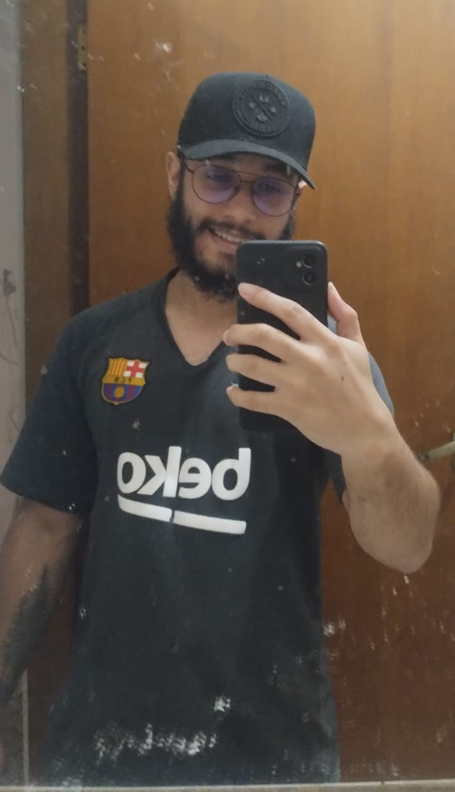
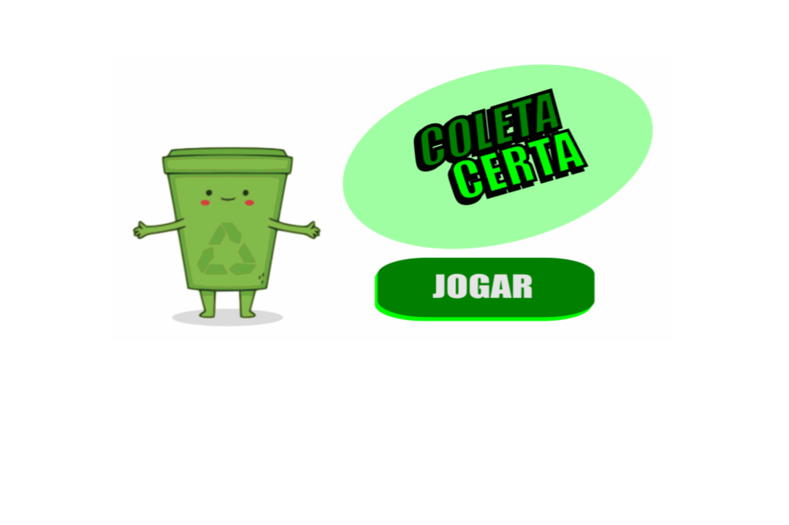
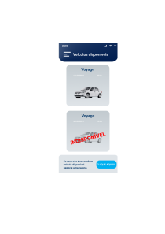
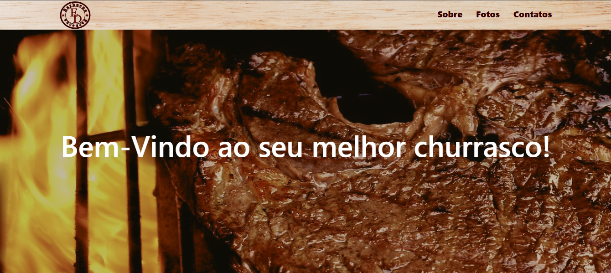

Olá! Bem-Vindo ao meu portfólio
Espero que goste!

Sobre

Sou Kaue, um profissional da área de Tecnologia da Informação, com experiência em gerenciamento de projetos digitais (na área de Digital Office) e análise de dados. Tenho habilidades em Power BI, além de conhecimento em Python, HTML, CSS e JavaScript, o que me permite contribuir em projetos de desenvolvimento web e automação. Busco oportunidades para aplicar minhas competências e colaborar em iniciativas inovadoras.
Skills
comunicação

Possuo uma forte habilidade de comunicação, o que me permite transmitir informações de forma clara e eficaz. Essa capacidade facilita a colaboração com colegas e a interação em equipe, garantindo que todos estejam alinhados em relação aos objetivos do projeto.
trabalho em equipe
Tenho uma sólida experiência em trabalho em equipe, onde valorizo a diversidade de ideias e perspectivas. Colaborar com colegas de diferentes áreas enriquece os projetos e contribui para alcançar resultados positivos em grupo.
adaptabilidade
Sou altamente adaptável a mudanças e novos desafios. Essa flexibilidade me permite enfrentar situações dinâmicas com confiança, buscando soluções criativas e ajustando-me rapidamente a novas circunstâncias.
Projetos

Coleta Certa: Aprendendo a Separar o Lixo Brincando!
Desenvolvi a gamificação "Coleta Certa", uma iniciativa voltada para a educação ambiental, com o objetivo de ensinar crianças sobre a correta separação do lixo e a importância da reciclagem.
Link para jogar
Design do aplicativo para reserva de veículos da frota
Durante o meu período na empresa Volkswagen Caminhões e Ônibus, desenvolvi uma ideia de aplicativo voltado para a reserva de veículos da frota, o qual o formulário era feito em papel, em que o objetivo era ajudar os funcionários da empresa a reservar carros ou caronas para se deslocarem do escritório para à fábrica e vice-versa. Desenvolvi o fluxograma de jornadas e o design do aplicativo de acordo com as regras de Marketing da empresa.
Link
Site da Clinica Gabriela Madazio
Primeiro site que desenvolvi para um cliente, no caso o site apresenta um banco de dados local que foi aproveitado para concluir um projeto da faculdade.
Link do GitHubLink do Vídeo
Site ED Churrasco
Ladding page com o intuito de divulgar os churrascos e eventos feitos pelo churrasqueiro Edilson.
Link do siteLink do GitHub